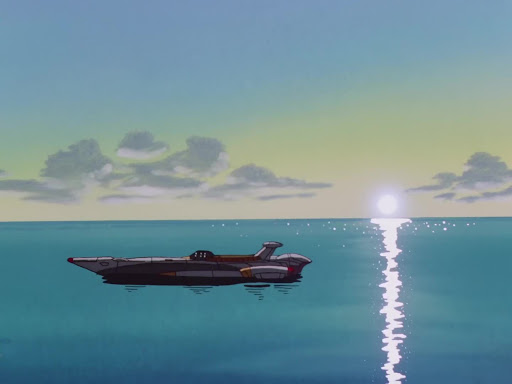

Les méchanics, dans la série de Gainax Nadia et le secrete l’eau bleue ont été beaucoup influencés par Jules Verne (1828-1905), le premier écrivain de sciences fiction français. Beaucoup d’exemples apparaissant dans la série sont tirés de ses livres Vingt mille lieues sous les mers et Voyage au centre de la terre.

Historique
Les Mécanics de Nadia se situent en 1900 à l’Exposition universelle de Paris. Dans les premiers épisodes apparaît l’engin le plus important qui est le Nautilus de 20 000 lieues sous les mers.
Le Nautilus de Jules Verne et de Nadia ne sont pas les premiers submersibles et sous-marins qui apparurent dans la guerre navale du début du XXe siècle. L’origine du nom Nautilus est latine et fut attribuée à un mollusque datant du Trias (un céphalopode, vivant encore à l’heure actuelle, pour être précis, NDMotenaï).
Le concept du sous-marin ne fut pas inventé par Jules Verne dans 20 000 lieues sous les mers mais en 1870, par un irlando-américain: Robert Fulton, autodidacte de son état, qui établit l’art et la manière d’utiliser le “bateau sous-marin” comme arme de dissuasion. Il ne fut mis réellement en application qu’au début de ce siècle. La seule nouveauté fut d’intégrer l’énergie perpétuelle (la propulsion nucléaire) au bateau de Fulton.
Après beaucoup de polémiques, deux sous-marins furent construits et testés par la Marine Française entre 1900 et 1910, et baptisé Nautilus 1 et Nautilus 2.
Terminons ce petit détour historique. Nous allons entamer la comparaison entre le Nautilus de Disney et celui de Gainax.
Disney vs Gainax
Le sous-marin de Disney avait une longueur de 75 mètres et était construit avec des rivets. Il était construit avec les premiers aciers et plongeait à environ 200 et 300 mètres de profondeur. Sa propulsion était nucléaire et il ne possédait aucunes armes offensives et défensives. Il ne faisait qu’éperonner les bateaux et sciait leur coque.
A contrario, le Nautilus de Nadia est un sous-marin classé dans la catégorie des bateaux modernes et semi futuristes. Sa taille est d’environ 250 mètres de long. Par sa taille, il est comparable au sous-marin russe de type Typhon qui mesure 174 mètres de long, qui existe en six exemplaires. La notoriété du sous-marin Typhon est due au film A la poursuite d’octobre rouge, d’après le livre de Tom Clancy (mais aussi au jeu Game Boy du même nom, NDMoténaï). L’armement du Nautius est constitué de missiles et d’anti-missiles, de sonars actifs et passifs, et de contre-mesures (pour plus de détails, se référer au film précédemment cité). Sa propulsion nucléaire ne fait pas tourner une hélice classique mais une turbine sous voûte qui le rend silencieux et évite toute cavitation pouvant donner l’identité du sous-marin aux autres navires.
Autre détail important, ce sous marin est construit par la technologie des Atlantes: coque soudée au laser au lieu d’être rivetée. Il est construit par sections lui permettant d’aller à des profondeurs exceptionnelles, entre 1000 et 3000 mètres. Cette résistance est due à sa construction dérivée du vaisseau de type Exelsion. Il a un équipage réduit et possède une cloche de plongée.
En parallèle, les sous-marins de la “Nouvelle Atlantide” d’Argon (Gargoyles) sont proches de la description du vaisseau de Jules Verne. Ils ont subits divers améliorations dont les torpilles, le contre-mesures et les leurres. Il plongent aux alentours de 100 à 200 mètres. Ils éperonnent tous les bateaux dans l’atlantique et pillent les navires marchands.